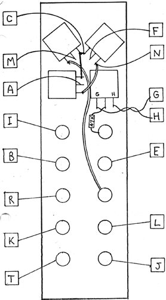

|
Variable "Q" Filter Wiring Diagram

Test Procedure; 1. Apply a sawtooth wave from an oscillator or slew into input 1. Manually turning the center frequency pot and the "Q" pot should produce filter sweeps of varying "Q"s and frequency ranges at the LOW, HIGH, and BAND pass outputs. 2. Using a control voltage source, test the VC-F and VC-Q functions. Note the processing input on the VC-F as well as a calibrated IV/octave input. 3. Apply a signal to the manual gain input (IN 2), and turn up the manual gain pot. This input differs from IN 1 in that the gain of IN 1 is automatically controlled for use with increasing Q. As Q is increased, the gain of IN I is decreased to compensate for the peaked response of the high Q filter. Note the difference by first applying a signal to IN 2 and increasing and decreasing the Q, then applying a signal to IN 1 varying the Q. 4. The NOTCH output should produce a phasing type sound if a sawtooth wave or a noise signal is applied to the filter input, the 0 is low, and the frequency is swept. 5. Apply a pulse source into the TRIG input while listening to the BAND output. A percussive timbre should be present which can be changed dramatically by changing the filter frequency and increasing the Q. NOTE: The wires to pads G and H should be twisted together loosely. RESISTOR COLOR CODE: 47k: Yellow-Violet-Orange-Gold
|